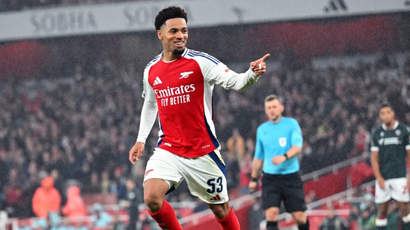
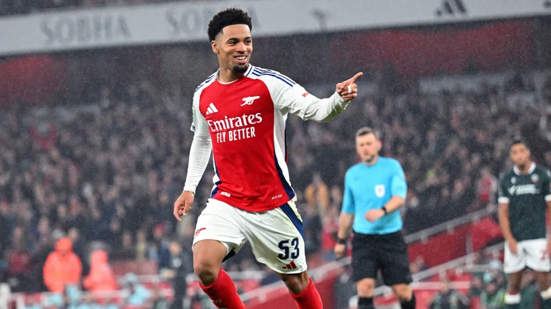

Breaking news

Breaking Down the Latest Championship Game
The latest championship game was nothing short of spectacular. We analyze the key plays, the standout performances, and the moments that defined the match.
From the opening whistle to the final moments, this game had fans on the edge of their seats...

Player Spotlight: Rising Stars in 2024
2024 has seen the emergence of several young talents(Ethan,kucuri,Joshua and Skellys) Arsenal youngsters who are taking the sports world by storm. In this post, we spotlight the athletes making headlines,
breaking records, and setting themselves up for legendary careers...
Breaking Down the Latest Championship Game
The latest championship game was nothing short of spectacular. We analyze the key plays, the standout performances, and the moments that defined the match. From the opening whistle to the final moments, this game had fans on the edge of their seats...

Player Spotlight: Rising Stars in 2024
2024 has seen the emergence of several young talents(Ethan,kucuri,Joshua and Skellys) Arsenal youngsters who are taking the sports world by storm. In this post, we spotlight the athletes making headlines, breaking records, and setting themselves up for legendary careers...